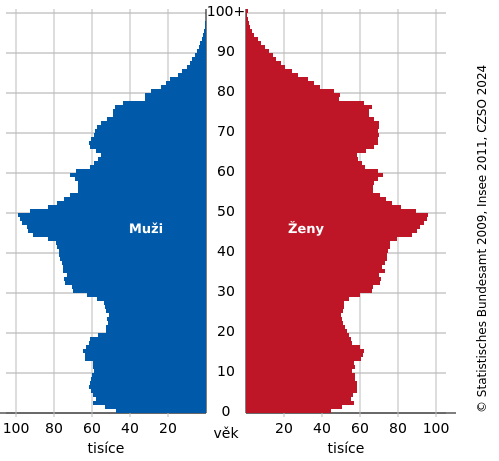

K 31. prosinci 2024 žilo v České republice 10 909 500 obyvatel, což
je nejvyšší počet od konce druhé světové války. Přirozený úbytek
obyvatelstva činil −27 900 osob, způsobený převahou zemřelých nad
narozenými. Celkový přírůstek obyvatel byl 8 900 osob, díky
zahraniční migraci (+36 800). Počet živě narozených dětí dosáhl
historického minima 84 311, což představuje meziroční pokles o 8 %.
Informace
- počet obyvatel ČR: 10 897 237 (30. 9. 2024, ČSÚ)
-
porodnost (natalita, počítá se v ‰) - počet narozených dětí na datém
místě v daném čase
-
úmrtnost (mortalita, počítá se v ‰) - počet zemřelých na datém místě
v daném roce
- sčítání lidu - každých 10 let, ČSÚ
Složení obyvatelstva

data k 31. 12. 2023, ČSÚ
- věková pyramida
- věkové složení obyvatelstva
- předproduktivní (0 - 14 let) - 13 %
- produktivní (15 - 64 let) - 70 %
- postproduktivní (65 a více let) - 17 %
Vývojové trendy
Více lidí se do ČR přistěhuje, než se zde narodí dětí.
Dochází ke stárnutí populace, tj. postupně bude přibývat obyvatel v
důchodovém věku.
Ženy se dožívají více let něž muži.
Páry mají stále méně dětí.
Nejvýznamější národopisné oblasti ČR
Valašsko
- Bílé Karpaty, Javorníky, Beskydy
- frgál, kroj
Slovácko
- Dolnomoravský úval
- vinné sklepy, sýry
Chodsko
Haná
- Olomoucko
- tvarůžky, Hanácké kraslice
Národnosti v ČR
- česká - 81 %
- moravská - 13 %
- slezská - 0,4 %
menšiny
- slovenská - 3 %
- polská - 0,6 %
- německá - 0,5 %
- rómská - 0,1 %
- ukrainská - 0,1 %
- vietnamská - 0,02 %
Údaje jsou platné k únoru roku 2022.